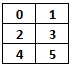

Descripción
Descripción 2
|
TC 1028. Pensamiento Computacional para Ingeniería . |
Actividad: Desarrollando programas con listas anidadas o matrices
Descripción
Desarrollarán la solución de algunos problemas.
 Objetivo
Objetivo
Escribir programas en Python que hagan uso de estructuras de listas anidadas y modelar matrices.
 Modalidad y forma de trabajo
Modalidad y forma de trabajo
Diseño colaborativo, implementación individual.
 Problemas
Problemas
En un mismo programa desarrolla las siguiente funciones y el script principal:
1. creaMatriz(renglones, columnas)
La función creaMatriz(renglones, columnas) que recibe el número de renglones o listas a crear y también recibe el número de columnas (número de elementos) de cada lista/arreglo (El número de elementos de cada lista o arreglo debe ser del mismo tamaño para simular matrices) y regresa una lista anidada. La función pide los valores al usuario para llenar una matriz siguiendo el orden que se muestra en el ejemplo.
Casos de prueba: Si la lista anidada es de 3 renglones x 2 columnas, entonces se pedirán 6 valores.

Input: Número de opción (1.
creaMatriz(renglones, columnas))
|
Input: 1
|
|
|
Input: 1
|
Input: 1
|
2. sumaDiagonal(matriz)
La función sumaDiagonal(matriz) que recibe una matriz cuadrada y suma todos los elementos en la diagonal que empieza en 0, columnas-1 y termina renglones-1,0. La función pide los valores al usuario para llenar una matriz siguiendo el orden que se muestra en el ejemplo. Si la matriz no es cuadrada debe regresar False. Manda llamar primero la función creaMatriz para llenar la matriz y asegurarte que tienes valores que sumar, antes de usar sumaDiagonal.

Casos de prueba: Si la lista anidada es de 2 renglones x 2 columnas,
entonces se pedirán 4 valores.
Input: Número de opción (2.
sumaDiagonal(matriz))
|
Input: 2
|
|
|
|
3. sumaDiagonal_Inversa(matriz)
La función sumaDiagonal_Inversa(matriz) que recibe una matriz cuadrada y suma todos los elementos en la diagonal que empieza en 0,0 y termina en renglones-1 y columnas-1. La función pide los valores al usuario para llenar una matriz siguiendo el orden que se muestra en el ejemplo. Si la matriz no es cuadrada debe regresar False. Manda llamar primero la función creaMatriz para llenar la matriz y asegurarte que tienes valores que sumar, antes de usar sumaDiagonal_Inversa.

Casos de prueba: Si la lista anidada es de 2 renglones x 2 columnas,
entonces se pedirán 4 valores.
Input: Número de opción (3.
sumaDiagonal_Inversa(matriz))
|
Input: 3
|
|
|
|
|
4. encuentraGrupo(nombresEpicos, nombre)
La función encuentraGrupo que recibe la lista anidada de nombresEpicos y una cadena. La función debe regresar el grupo completo en el que se encuentra el nombre. Si no encuentra el nombre debe regresar "el nombre no es epico".
Casos de prueba: Si la lista a crear es de tamaño 3, entonces se pedirán 3 valores.
Input: Número de opción (4.
encuentraGrupo(nombresEpicos, nombre))
|
Input: 4
|
|
|
|
6. Script principal
Desarrolla un programa en Python que de acuerdo a la opción seleccionada por el usuario le dé la oportunidad de ejecutar cualquiera de las funciones que han sido construidas.
nombresEpicos=
[
["Naofumi", "Filo", "Raphtalia"], ["Rand Al'thor", "Perrin Arabaya", "Mathrim
Cauldron", "Egwene Al'vere", "Nynaieve Al'mere"], ["Lithany of Fury",
"Macragge's Honour", "Vengeful Spirit", "Harbinger of Doom", "Chronicle of
Ashes"], ["Cloud Strife", "Sephiroth", "Vincent Valentine", "Zack Fair", "Aerith
Gainsborough", "Tifa Lockhart", "Barret Wallace", "Yuffie Kisaragi"], ["Cormyr",
"WestGate", "Suzeil", "Menzoberranzan", "Waterdeep"], ["Atlas", "Dectective
Comics", "Dark Horse", "Image"] ]
opcion = int(input())
if opcion == 1:
r = int(input())
c = int(input())
matriz = creaMatriz(r, c)
print(matriz)
r = int(input())
c = int(input())
matriz = creaMatriz(r, c)
res = sumaDiagonal(matriz)
print(res)
 Recursos
Recursos
4. Condicionales
 Especificaciones de entrega
Especificaciones de entrega
Instrucciones para enviar tu archivo por Alphagrader (www.alphagrader.com):
.
|
© 2019 Escuela de Computación y Mecatrónica . |